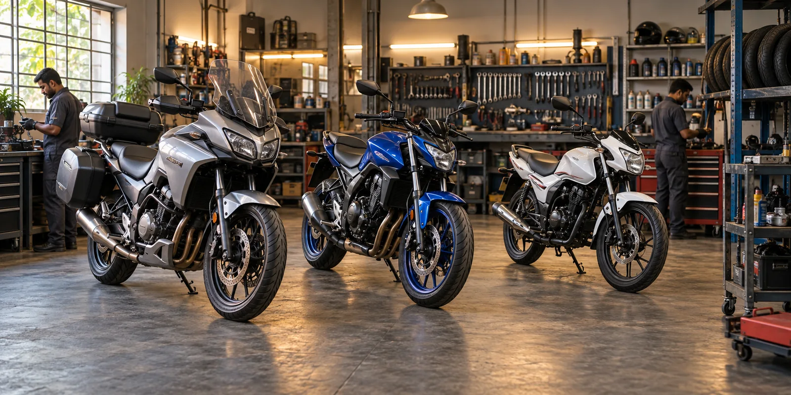

Classic singles, twins and modern road models serviced with careful mechanical checks.
Multi-brand capability
Different badges. The same care.
We support leading commuter, touring and performance motorcycles with model-aware maintenance and practical parts advice.

Trusted range
From the daily commute to the weekend road.
Coverage varies by model year, tooling and parts availability. Share your exact model and year when booking so we can confirm support before your visit.
Dependable commuters and premium road bikes maintained for smooth daily performance.
Routine care and fault finding for commuter, street and performance-focused models.
Model-aware servicing for high-output singles and twin-cylinder road motorcycles.
Practical maintenance for daily commuters, scooters and Apache performance models.
Clear, efficient service for Pulsar, Dominar and everyday commuter motorcycles.
Care for efficient commuters, road bikes and popular sport-touring models.
Maintenance and diagnostics for selected premium parallel-twin and inline models.
Selected routine maintenance for scooters and performance motorcycles by enquiry.
Shared-platform knowledge for selected modern street and scrambler models.
Selected maintenance work subject to model, tooling and diagnostic requirements.
Selected routine service and wear-item work for modern road models by enquiry.
Brand names are used only to describe service compatibility. This demonstration business is not an authorised service centre for, or affiliated with, the listed manufacturers.
Platform mastery
Dedicated tooling for your engine architecture.
Every motorcycle badge uses distinct engineering tolerances. We don’t use generic guesswork—our workshop bays are equipped with dedicated diagnostic scanners, calibrated torque keys, and platform-specific service jigs.
Thumpers & Modern Classics
Royal Enfield · Honda CB350 · Jawa / Yezdi
Valve Lash Check
Chain Slack Spec
Anti-Vibration Mounts
High-Revving Performance
KTM Duke/RC · Yamaha R15/MT-15 · TVS Apache
OBD-II Scan
Shim Under Bucket
Cooling System Vacuum
Parallel Twins & Adventure
Kawasaki Ninja/Z · RE 650 Twins · Triumph · BMW
Throttle Body Sync
CAN-bus Check
Laser Alignment
Urban Commuters & Automatics
Honda Activa/Shine · TVS Jupiter · Suzuki Access · Pulsar
CVT Belt Deflection
Clutch Deglazing
Fast Turnaround
Riding a custom build, parallel import, or vintage twin?
Enquire about your bike
We review technical workshop manuals and source specialized parts before booking your motorcycle on the service lift.
Before you visit
Send the model, year and symptom.
That one detail helps us confirm tooling, parts lead time and the right workshop slot before you travel.
Check your bike